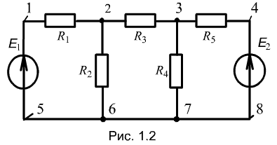

Примечания. 1. Точки 5, 6, 7 и 8 имеют одинаковый электрический потенциал, поэтому они могут быть объединены в одну общую точку - узел.
2. Точки 1 и 4 соединяют по два элемента, поэтому их называют точками соединений, а не узлами.